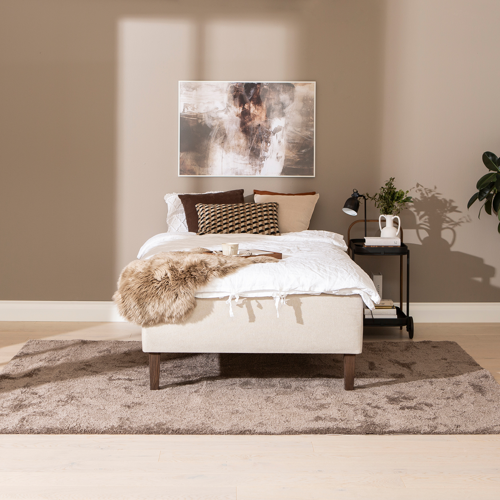
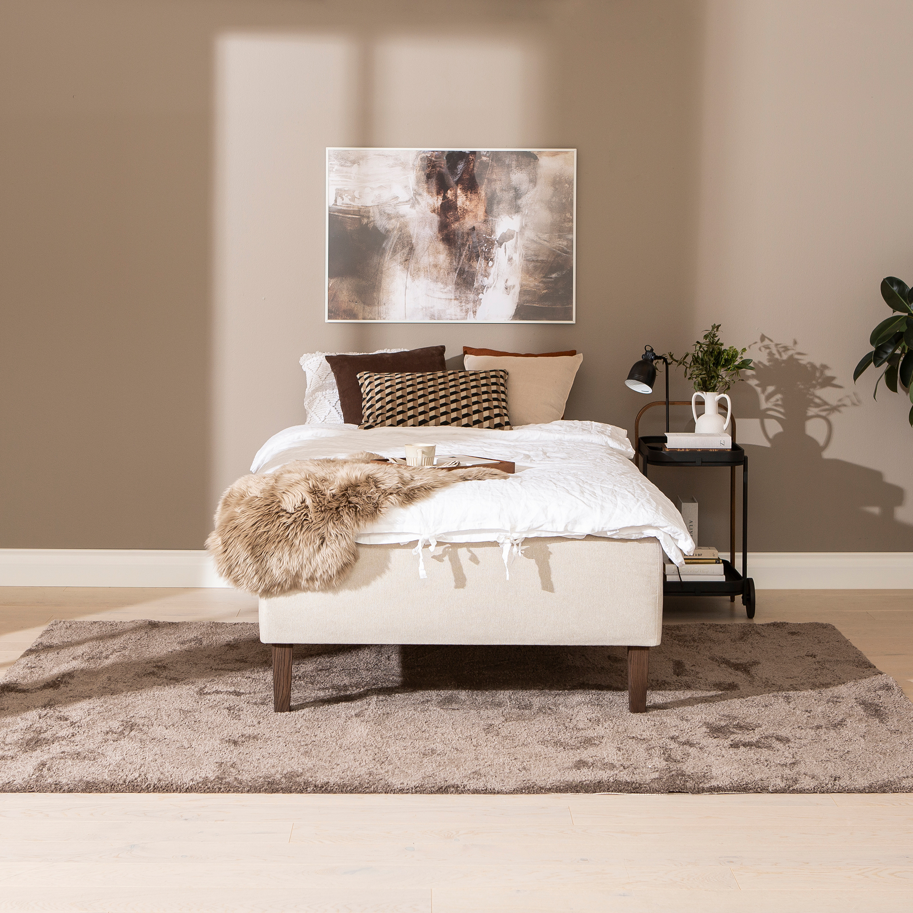

Moon Gold divan bed 140x200, visco, Primo 05 beige
197676

 

Description
Enhance your bedroom with the Moon Gold divan bed sized 140x200 cm, part of the elegant NEST & LIVING collection. This Gold tier divan bed combines sophisticated design with outstanding comfort and practical features to ensure restful nights. Upholstered in durable Primo 05 beige fabric, it complements both classic and contemporary interiors with soft neutral tones. The bed offers versatile comfort options tailored to your preference: choose between a supportive 7-zone pocket spring system that individually adjusts to your body or a pressure-relieving memory foam layer that contours to your shape. Both options guarantee a restful and rejuvenating sleep experience. Its robust frame is crafted from quality durable wood, ensuring longevity, while the 23 cm cone-shaped legs finished in smoked ash add a modern touch and lightness to the overall structure. The Moon Gold divan bed also allows customization with optional mattress toppers and coordinating headboards available separately, giving you the freedom to create your ideal sleeping environment. Offering a remarkable 4000-day quality guarantee, this bed emphasizes both reliability and style. Maintenance is easy—simply vacuum regularly and wipe upholstery with a damp cloth to keep it fresh. Choose the Moon Gold divan bed from NEST & LIVING for a harmonious blend of quality, comfort, and timeless design suited to elevate your bedroom ambiance.
Technical specifications
| Size | 140 × 200 cm |
|---|---|
| Tier | Gold |
| Colors | Beige or Anthracite |
| Upholstery material | Primo 05 fabric |
| Comfort options | 7-zone pocket spring or memory foam |
| Frame | Durable wood |
| Legs | 23 cm cone-shaped legs in smoked ash finish |
| Guarantee | 4000-day quality guarantee |
| Care instructions | Regular vacuuming and wiping with a damp cloth; durable materials for easy maintenance |